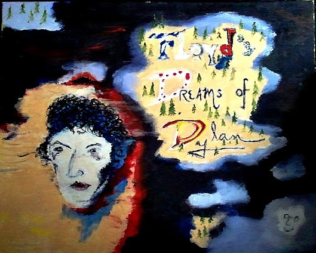
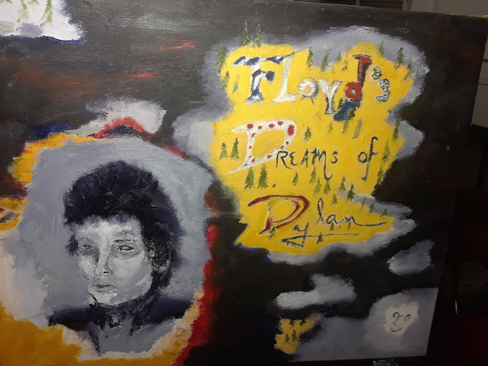

Floyd's Dreams of Dylan #1
An Art Series of Paintings by Jeremy Nelson, an homage to our shared love of Bob Dylan with my friend Floyd Shiery.

First Pass
First paint pass for Floyd's Dreams of Dylan on 02014-03-23.

Second Pass
Some representative placeholder content for the second slide.
Third slide label
Some representative placeholder content for the third slide.